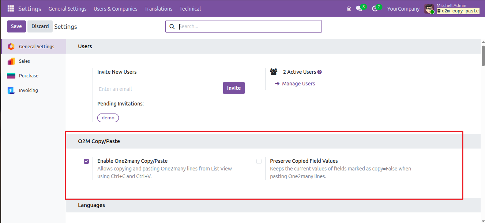
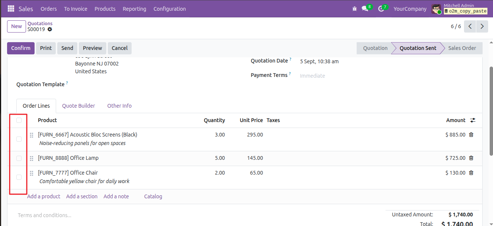
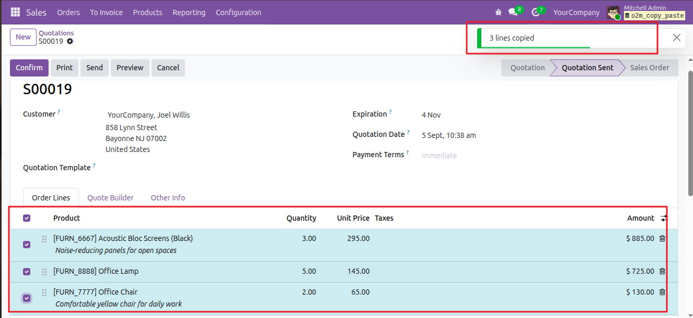
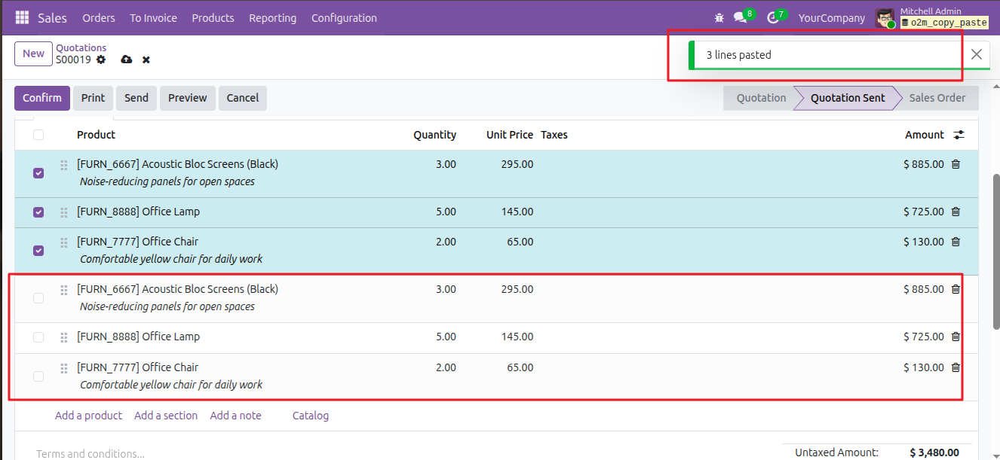
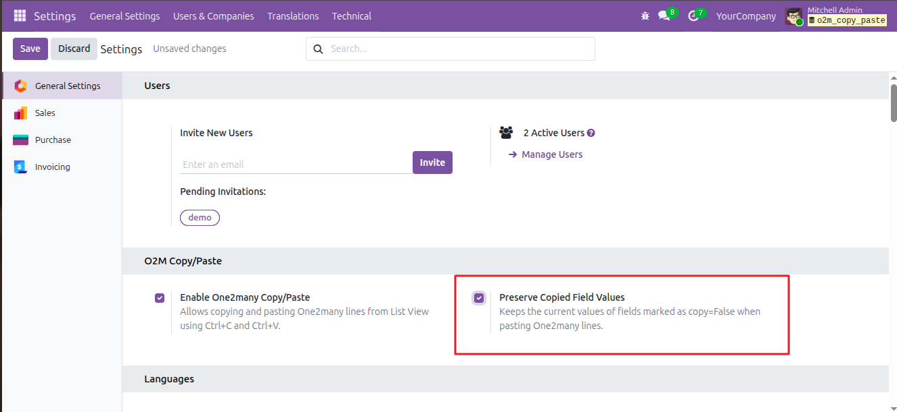
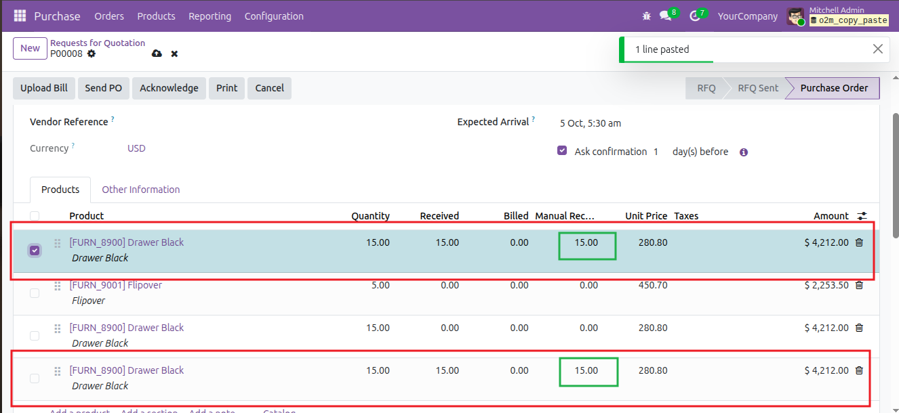
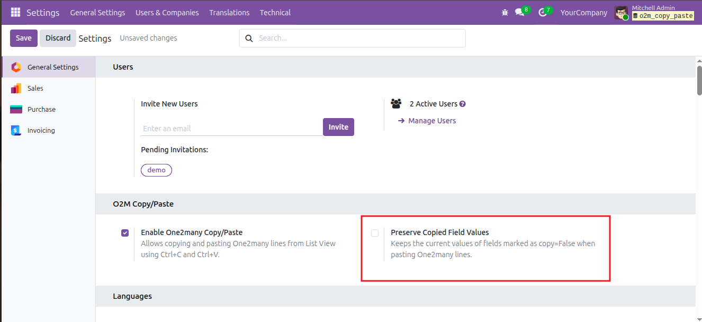
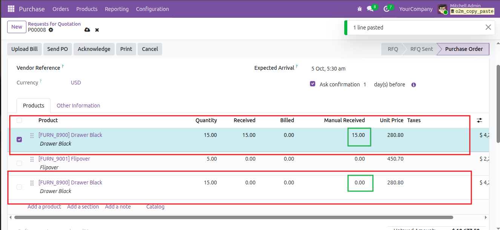
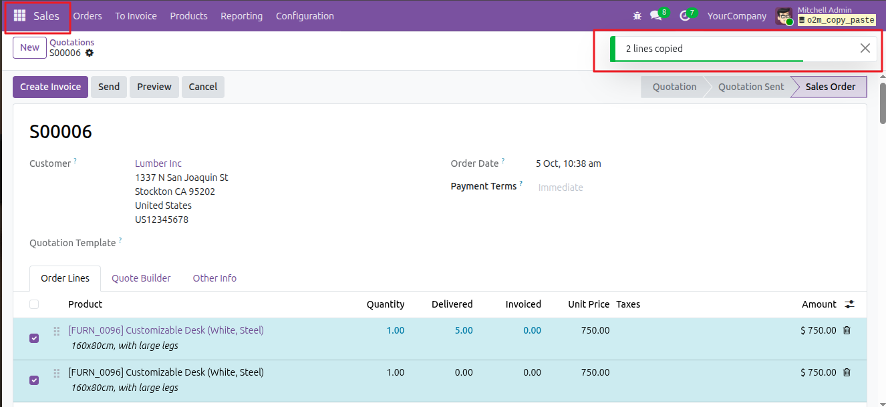
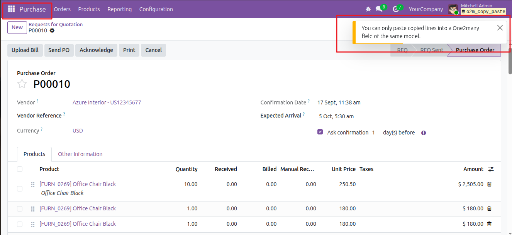

One2many Copy Paste makes it easy to duplicate One2many lines directly from the Odoo List View. Users can select one or more lines, copy them using Ctrl+C, and paste them into another One2many List View using Ctrl+V. The module also provides company-wise settings to control Copy/Paste availability and the handling of fields configured with copy=False.
Configure the One2many Copy/Paste feature from General Settings. The module provides two settings: one to enable or disable Copy/Paste functionality and another to control whether values of fields configured with copy=False are preserved.
Configuration Flow: Open General Settings → Enable One2many Copy/Paste → Configure Preserve Copied Field Values

This field controls the One2many Copy/Paste functionality. When enabled, One2many List View lines can be selected, copied using Ctrl+C, and pasted using Ctrl+V.
This field controls whether the current values of fields configured with copy=False are retained when One2many lines are pasted.

Copy/Paste functionality available in the One2many List View
Select one or more One2many lines from the List View and press Ctrl+C to copy them. Open the required target One2many List View and press Ctrl+V to create the copied lines.
Copy/Paste Flow: Select Lines → Press Ctrl+C → Open Target List → Press Ctrl+V
Select the required lines using the List View selection checkboxes and press Ctrl+C. You can select a single line or multiple lines before copying.

Open the target One2many List View and press Ctrl+V. The copied lines are added to the target List View based on the configured Copy/Paste settings.

Note: Copy/Paste functionality is available only when Enable One2many Copy/Paste is enabled.
Some Odoo fields are configured with copy=False. This setting determines whether the existing value of such a field should be kept when a One2many line is copied and pasted.
How it works: Enable Preserve Copied Field Values to keep the existing value of copy=False fields. Disable it to follow the normal Odoo behavior.
When this option is enabled, the value currently present in a copy=False field is retained when the One2many line is pasted.

Preserve Copied Field Values Enabled

Copied Value Preserved
Result: The existing value of the copy=False field is preserved in the newly pasted One2many line.
When this option is disabled, copy=False fields are not preserved during paste. The standard Odoo behavior is used instead.

Preserve Copied Field Values Disabled

Normal Odoo Behavior
Result: The copy=False field follows the standard Odoo behavior, so its original value is not preserved during paste.
One2many lines can be copied and pasted only within the same model. For example, lines copied from a Sales Order cannot be pasted into a Purchase Order because they belong to different models.

Lines are selected and copied from the Sales Order using the Copy/Paste functionality.

The copied lines are pasted into the Purchase Order, where a warning is displayed because it is a different model.
Note: Copy/Paste is supported only between One2many fields of the same model.
For any assistance related to this module, customization or Odoo development.